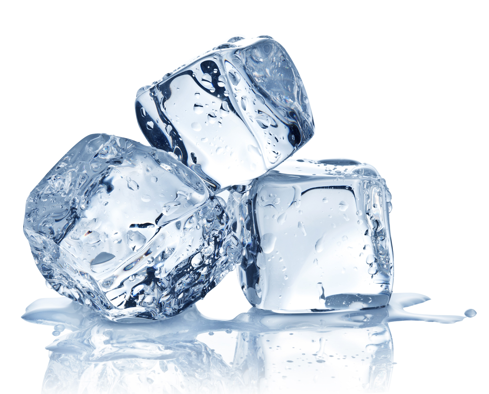

Ice Cube

Decription
This is a recipe to make an ice cube. Many think that the process
to make ice is remarkably simple, but they are WRONG! Making ice
is an unbelievably complicated process involving many high-end
scientific proccesses.
Ingredients
Prep
- 1 cup of sugar
- 1 liter of water
- 10 large lemons
- 1 bag of premade ice
Sauce
- 500 mg of sodium chloride
- 1 gallon of distilled water
Steps
Prep
- Juice the lemons, being careful to keep the seeds out of the juice.
- Combine lemon juice, sugar, and water in a large ewer.
- Set aside in fridge for later.
Sauce
- Suspend the NaCl in the H2O.
- Add the sodium chloride solution to a saucepan and bring to a boil.
- Place overly large bowl over the boiling solution.
- Create a bundt-pan-esque contraption to catch the distilled water droplets falling from oversized bowl.
- Wait approximately 3-5 hours for distillation process to complete.
- With purified water, fill up one ice cube tray and place in freezer.
- Let the water freeze for 2-3 hours, or overnight. While waiting for ice to be completed, take premade ice and add it to the lemon mixture you made earlier that is sitting in the fridge. Enjoy ice cold lemonade before marveling at the ice you made.
Return to main page